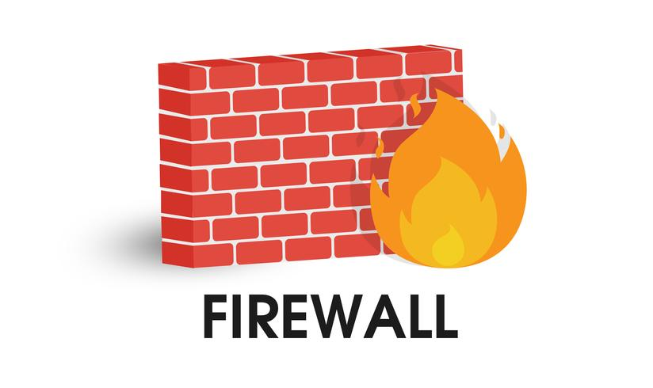
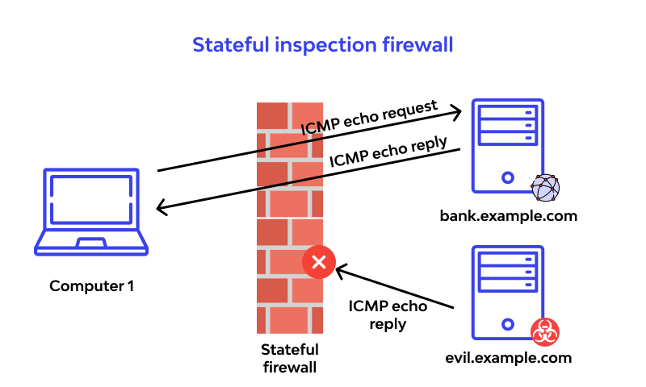
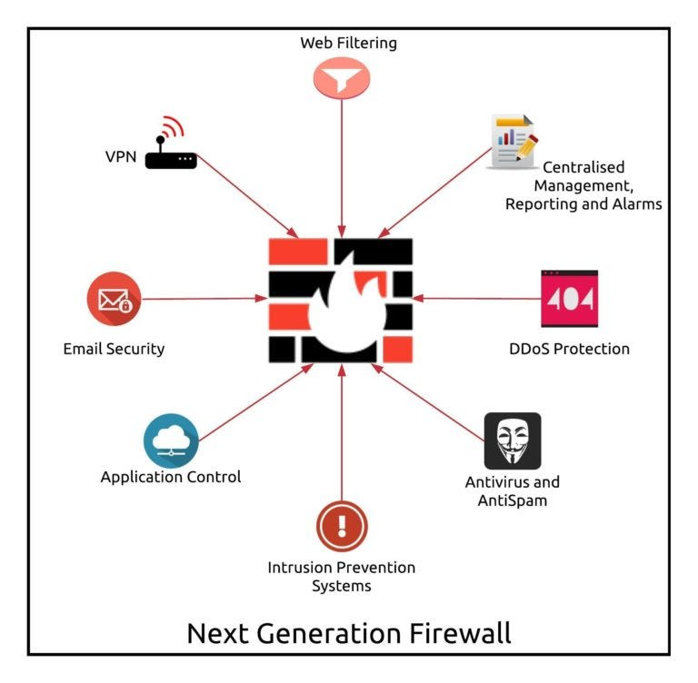
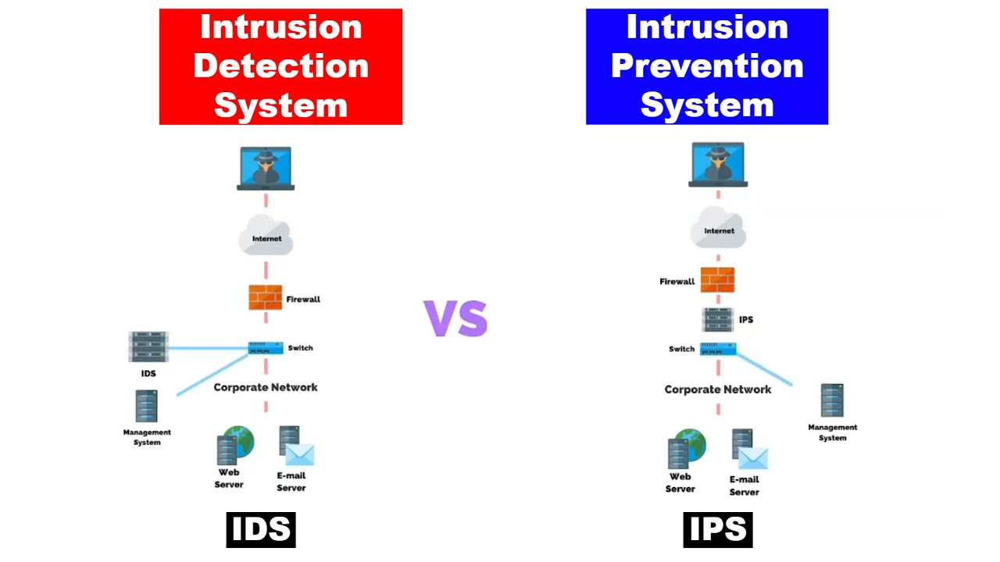
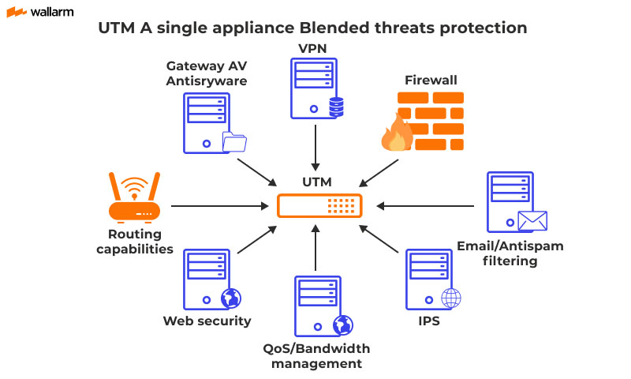
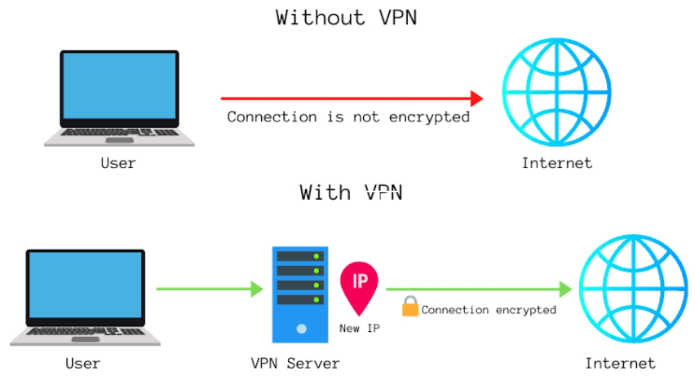
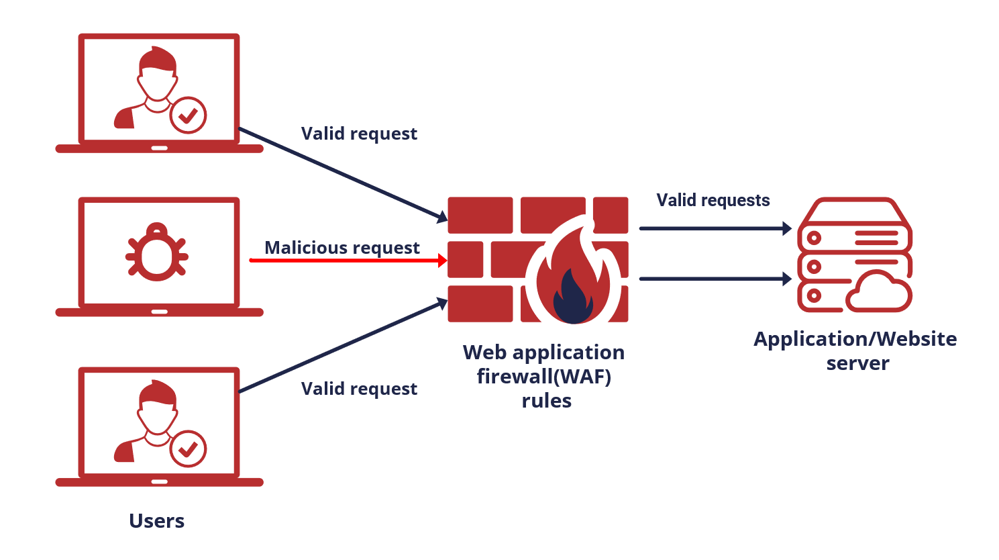
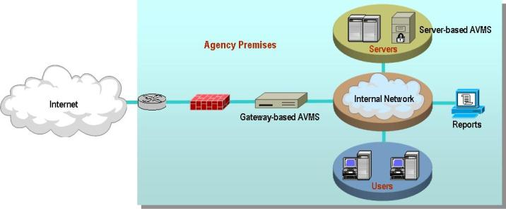

4.1.CyberSecurity Devices and Technologies
Discussion
In today’s digital landscape, cybersecurity devices and technologies are critical to safeguarding organizations against a wide array of cyber threats. These technologies, including firewalls, Intrusion Detection and Prevention Systems (IDS/IPS), and malware protection solutions, are designed to work in tandem to prevent, detect, and mitigate cyberattacks. By integrating these tools, organizations can establish a comprehensive, multi-layered defense that effectively protects their networks, systems, and sensitive data. This section will provide a detailed overview of the key technologies that form the foundation of a robust cybersecurity strategy.
4.1.1 SECURITY APPLIANCES
Discussion
Security appliances are specialized hardware devices designed to protect networks, systems, and data from various cyber threats. These appliances act as the first line of defense in an organization’s cybersecurity infrastructure, performing critical functions like traffic filtering, threat detection, and automated response to attacks. By leveraging these devices, organizations can enhance their security posture and ensure continuous monitoring and protection of their digital assets. Below is a list of commonly used security appliances in modern cybersecurity strategies:
1. Firewall
A firewall is a security device or software that acts as a barrier between a trusted internal network and an untrusted external network, such as the internet. It monitors and controls incoming and outgoing network traffic based on predefined security rules, blocking unauthorized access while allowing legitimate communication.
-
Packet-Filtering Firewalls
Packet-filtering firewalls monitor and control network traffic by examining individual data packets. They apply rules based on IP addresses, port numbers, and protocols to determine whether to allow or block the traffic.

-
Stateful Inspection Firewalls
Stateful inspection firewalls track the state of active connections and make decisions based on the context of traffic. These firewalls maintain a table of active connections and allow packets that are part of a valid connection while blocking others.
 -
Next-Generation Firewalls (NGFW)
Includes advanced features like deep packet inspection, application awareness, and intrusion prevention.

2. Instruction Detection and Prevention Systems(IDS/IPS)
IDS/IPS appliances detect and prevent malicious activities on a network. An Intrusion Detection System (IDS) monitors network traffic for signs of attacks or abnormal behavior, while an Intrusion Prevention System (IPS) not only detects but also blocks and mitigates these attacks in real-time.
3. Unified Threat Management (UTM) Appliance
A Unified Threat Management (UTM) appliance is an all-in-one security device that consolidates several security functions, such as firewall, antivirus, IDS/IPS, and VPN, into a single appliance.
4. Virtual Private Network (VPN) Appliances
VPN appliances provide secure remote access to an organization’s network. By encrypting the traffic between a user’s device and the corporate network, VPNs ensure that sensitive information is protected from interception.
5. Web Application Firewalls (WAF)
A Web Application Firewall (WAF) is a security appliance that protects web applications by filtering and monitoring HTTP requests between a web application and the internet. It is designed to protect web applications from common threats like SQL injection, Cross-Site Scripting (XSS), and Cross-Site Request Forgery (CSRF).
6. Anti-Malware Gateways
Anti-malware gateways are specialized security appliances designed to protect networks from various forms of malware, such as viruses, worms, ransomware, and spyware. These devices scan and filter both inbound and outbound traffic, ensuring that malicious content is detected and blocked before it reaches the internal network. They offer a crucial layer of defense by monitoring web, email, and file-sharing traffic, which are common vectors for malware attacks.